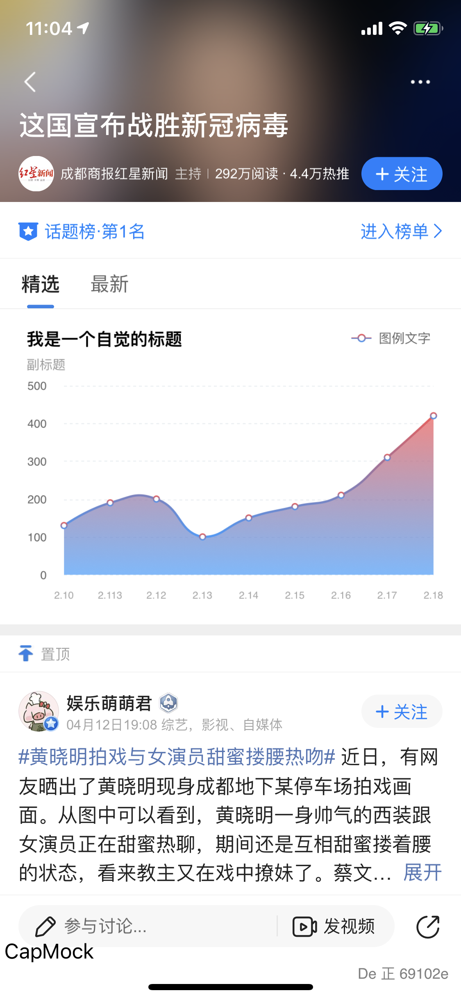
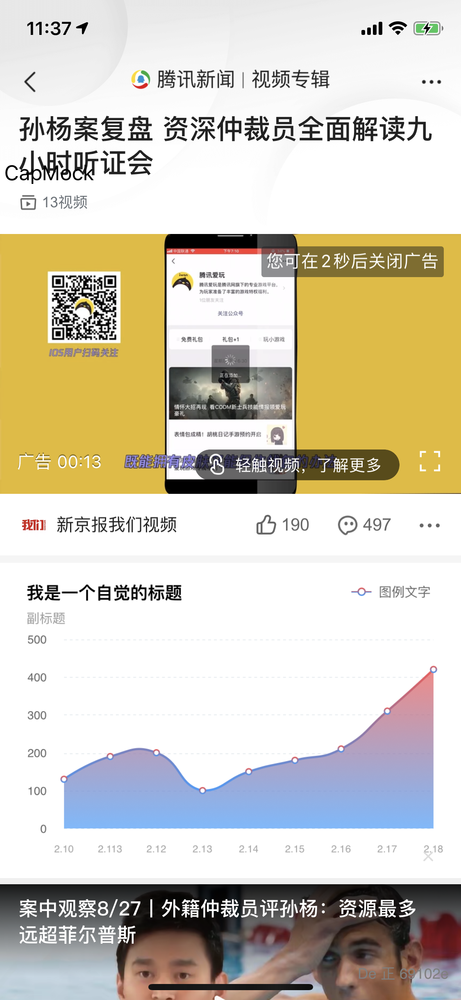

远程URL支持参数：
- qnResId：对应客户端发布系统资源ID。客户端下载对应ID离线包。
- qnShowType：webcell展示形式。0. ready后插入。1. 直接显示，h5处理loading。2.直接显示，先占位图，ready后隐藏，出错出刷新view；默认0
- qnAspectRatio ：默认web宽高比。默认宽度撑满全屏，根据此参数确定初始化高度。
- qnDiv：是否需要客户端添加底部分割线。0不添加，1添加，默认1
例:
https://news.qq.com/book/book-channel.html?qnResId=web_resource_novel&qnShowType=2&qnAspectRatio=0.2&qnDiv=1
对应加载资源id为web_resource_novel的离线资源，默认高度=屏幕宽度*0.2
资源打包
- 后缀名统一为 .qnweb
客户端发布系统 ：http://news.release.webdev.com/
客户端发布系统资源ID
- 疫情趋势（专题） ： web_resource_epidemic
- 小说频道 ： web_resource_novel
- 热点模板 ： web_resource_newsblocks
- 个人中心 ： web_resource_signin
- 疫情趋势（要闻）：web_resource_epidemic_channel
- 地方频道必读榜 ：web_resource_channel_topread
- 小说（搜索）：web_resource_novel_search
WebCell支持列表

目前支持CapMock设置以上列表插入WebCell:
| 列表 | 图例 | Capmock规则 |
|---|---|---|
| 热点追踪（同专题） | https://view.inews.qq.com/a/RSS201912240140021D | |
| 热推频道 | 图 10 11 | webcell - 热推推荐 / webcell - 热推中热推频道 |
| 专题列表 | 图3 4 | WebCell-专题列表-头部 |
| 个人页（主页列表） | 图 6 | WebCell-个人页 |
| 要闻/二级频道 | 图1 2 | WebCell-二级频道 |
| 图文底层页相关阅读 | 图 10 | WebCell-底层页相关新闻 |
| 搜索 | 图 7 | WebCell-搜索 |
| 视频专辑 （不能插入到顶部） | 图 8 | WebCell-视频专辑列表 |
| 视频底层 （不能插入到顶部） | 图 9 | WebCell-视频底层页 |
| 话题列表 | 图 5 | WebCell-话题列表 |
 |
 |
 |
 |
|  |  |
 |
 |
 |
 |
 |
 |